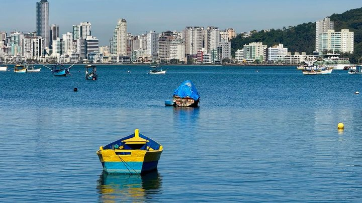

Viva Praia faz edição de Dia dos Pais neste sábado com mais de 140 expositores
A edição de agosto, quando a feira bateu os 140 expositores pela primeira vez no nosso registro.
A Secretaria de Turismo de Itapema abriu a Chamada Pública 002.2026 e procura empresas dispostas a pagar as atrações da edição especial do Viva Praia, marcada para domingo, 11 de outubro. O edital lista o que a empresa pode oferecer de graça, e os exemplos são bem concretos: pipoca, algodão-doce, picolé, pintura facial, brinquedo inflável, oficina, Festa das Cores, ingresso de passeio e prêmio como bicicleta e patinete. Em troca, a marca aparece no evento como Apoiador, Patrocinador ou Patrocinador Master. As propostas vão por e-mail até 5 de outubro, o que dá 8 dias a partir desta matéria. A conta de dias é nossa.
Em 30 segundos · Modo de Leitura, formato original Santa Informa
A Prefeitura quer empresa para bancar uma festa.
A festa é o Viva Praia do Dia das Crianças.
A data é 11 de outubro, um domingo.
O Dia das Crianças cai na segunda, dia 12.
Quem organiza é a Secretaria de Turismo.
O documento é a Chamada Pública 002.2026.
A empresa oferece alguma coisa de graça.
Pode ser comida, brinquedo, brinde ou oficina.
O edital cita pipoca e algodão-doce.
Cita também picolé e pintura facial.
E brinquedo inflável e Festa das Cores.
E prêmio, tipo bicicleta e patinete.
Ideia fora da lista também vale.
Desde que sirva para criança e família.
Em troca, a marca aparece no evento.
São três níveis de marca.
Apoiador, Patrocinador e Patrocinador Master.
O nível depende do tamanho da proposta.
Quem assumir uma atração inteira ganha outro nome.
Vira Parceiro Oficial de Experiência.
Só entra empresa com CNPJ regular.
O prazo vai até 5 de outubro.
São 8 dias, conta nossa.
A proposta vai para adm.turismo@itapema.sc.gov.br.
Tem que mandar ficha de inscrição e documentos.
Essa edição marca um ano do Viva Praia.
O projeto começou em 2025.
Em maio a feira teve mais de 140 stands.
Em agosto, no Dia dos Pais, também passou de 140.
O edital dos feirantes vale para 2025 e 2026.
A Prefeitura já está montando o próximo.
TurismoPublicada em Redação Santa Informa
A Secretaria de Turismo de Itapema está com chamada pública aberta para empresas que queiram apoiar a edição especial do Viva Praia, no domingo, 11 de outubro. A feira junta duas comemorações: o Dia das Crianças, que cai na segunda-feira seguinte, e o primeiro aniversário do projeto. O documento se chama Chamada Pública 002.2026 e está publicado na página de editais da Prefeitura.
A empresa oferece alguma coisa de graça para as crianças e as famílias. O edital dá exemplos: pipoca, algodão-doce, picolé, pintura facial, brinquedo inflável, oficina, Festa das Cores, ingresso para passeio e prêmio como bicicleta e patinete. Proposta fora da lista também pode ser apresentada, desde que sirva ao público infantil e familiar. Em troca, quem for selecionado divulga a marca durante o evento em um de três níveis, Apoiador, Patrocinador ou Patrocinador Master, conforme o tamanho da proposta. Quem assumir por inteiro uma atração da programação, como a pipoca ou a Festa das Cores, pode receber a identificação de Parceiro Oficial de Experiência.
Podem participar pessoas jurídicas regularmente constituídas, ou seja, empresa com CNPJ em ordem. As propostas vão por e-mail para adm.turismo@itapema.sc.gov.br até 5 de outubro, acompanhadas da ficha de inscrição e dos documentos exigidos na chamada. São 8 dias entre esta matéria e o fim do prazo, e 14 dias até a feira. As duas contas são nossas.
O Viva Praia foi criado em 2025 e ocupa um trecho da Orla do Centro com feira, esporte e lazer. O tamanho já apareceu duas vezes nas contas da própria Prefeitura: a edição temática de pré-Copa, em 17 de maio, teve mais de 140 stands, e a de Dia dos Pais, em agosto, que nós cobrimos, também passou dos 140 expositores. O edital que rege a participação dos feirantes vale para o biênio 2025/2026 e reúne 14 segmentos, de gastronomia e artesanato a brechó, jardinagem, literatura e jogos eletrônicos. Na noite de 22 de setembro, no CCI da Meia Praia, a Secretaria reuniu os feirantes para alinhar a edição do Dia das Crianças e ouvir sugestões para o próximo edital, que ainda está sendo escrito.
O resumo de 30 segundos está no topo e a versão completa é o texto acima. Aqui ficam as três leituras da casa sobre o mesmo assunto.
Clara, a otimista
Essa é daquelas portas que abrem para o pequeno. Não precisa ser rede grande para entrar: quem tem uma máquina de algodão-doce, uma oficina de desenho ou um estoque de brinde já pode mandar proposta e sair com a marca num evento que junta centenas de famílias na orla.
E a data ajuda. Outubro é o mês em que o comércio de Itapema começa a esquentar para a temporada. Aparecer ali, de graça, para o público que vai voltar a passar na sua porta em dezembro, é propaganda barata e bem colocada. Quem for rápido nos oito dias leva.
Seu Prudêncio, o criterioso
Merece atenção o tamanho da janela. Oito dias para reunir documento, montar proposta e decidir quanto se pode doar é prazo apertado para empresa pequena, que costuma ser justamente a que mais precisaria do espaço. Uma sugestão útil: publicar o resultado da seleção com alguns dias de folga antes do evento, para que quem entrar consiga comprar material e escalar gente.
Vale acompanhar também a régua entre os três níveis de marca. O texto diz que a classificação depende do impacto da proposta, sem dizer quanto vale cada faixa. Critério escrito em número evita dúvida depois, e protege tanto a empresa quanto a Prefeitura.
Dito isso, o desenho da chamada está certo no fundamental. É um edital público, com e-mail, prazo e exigência de CNPJ regular, para uma coisa que em muita cidade se resolve por convite informal. Chamar quem quiser aparecer, em documento aberto, é o jeito correto de fazer, e isso merece registro.
Caco, o sarcástico
A Prefeitura está oficialmente aceitando doações de pipoca. Com edital, ficha de inscrição e prazo. Nunca a pipoca foi tratada com tanto rigor administrativo nesta cidade.
Tem até nível de patrocínio. Você dá algodão-doce e vira Apoiador. Dá a Festa das Cores inteira e vira Parceiro Oficial de Experiência, que é o tipo de título que a gente coloca no currículo.
Mas reclamar de quê. A criançada vai ter picolé de graça na orla num domingo de outubro, o comerciante daqui ganha vitrine sem pagar mídia, e a conta não sai do nosso bolso. Tá ruim, mas é progresso.
Fontes: a abertura da chamada pública, a data de 11 de outubro, a soma do Dia das Crianças com o primeiro aniversário do projeto, a lista de exemplos (pipoca, algodão-doce, picolé, pintura facial, brinquedo inflável, oficina, Festa das Cores, ingresso de passeio, bicicleta e patinete), os três níveis de contrapartida, a figura do Parceiro Oficial de Experiência, a exigência de pessoa jurídica regularmente constituída, o prazo de 5 de outubro, o e-mail adm.turismo@itapema.sc.gov.br e a fala da secretária de Turismo Pati Marin estão na nota Chamada pública convida empresas a apoiar a edição especial do Viva Praia de Dia das Crianças, da Prefeitura de Itapema, de 23 de setembro de 2026, que abrimos e lemos por inteiro. O nome oficial do documento, Chamada Pública 002.2026, está na página do edital, no portal de editais da mesma Prefeitura. A reunião de 22 de setembro no CCI da Meia Praia, a preparação do próximo edital de chamamento, os 14 segmentos do edital do biênio 2025/2026 e a criação do projeto em 2025 estão em Turismo reúne feirantes e prepara edição especial do Viva Praia para o Dia das Crianças, também da Prefeitura, de 23 de setembro de 2026. Os mais de 140 stands da edição de 17 de maio estão em Edição temática de pré-Copa do Viva Praia movimenta a Orla de Itapema, de 18 de maio de 2026. A edição de Dia dos Pais foi publicada por nós em Viva Praia faz edição de Dia dos Pais neste sábado com mais de 140 expositores, de 6 de agosto de 2026. As contas de 8 dias, de 14 dias e o dia da semana em que cai 11 de outubro são nossas.
A edição de agosto, quando a feira bateu os 140 expositores pela primeira vez no nosso registro.

Itapema · CulturaO outro evento grande que a Orla do Centro recebe neste fim de ano, esse em novembro.
Como a cidade costuma mexer no trânsito quando a Orla do Centro recebe evento.